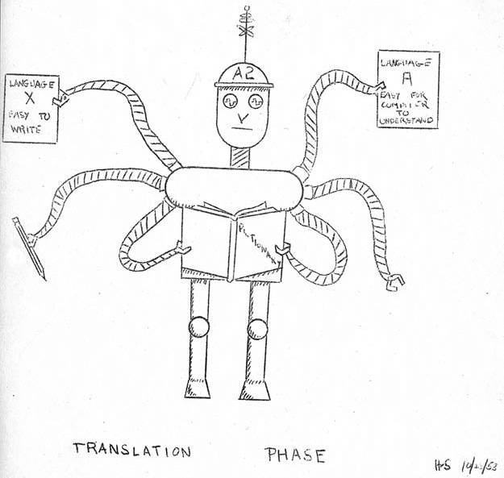
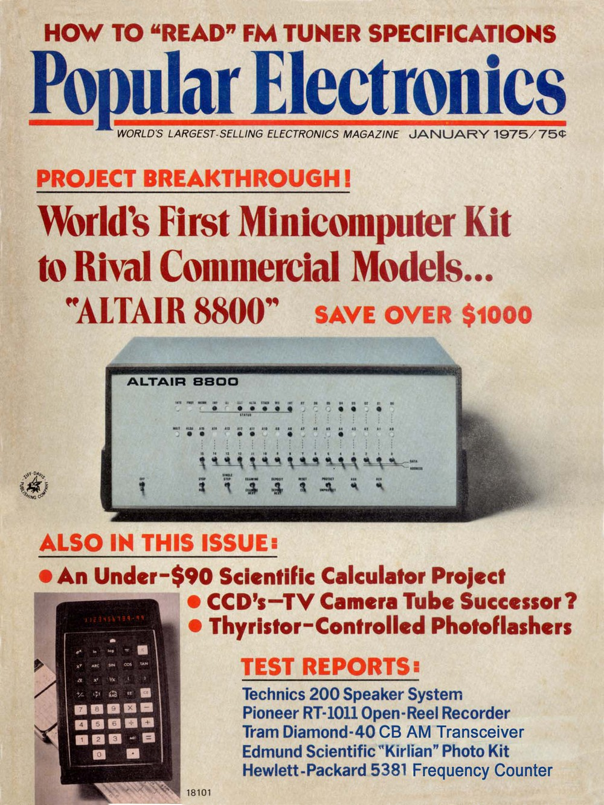
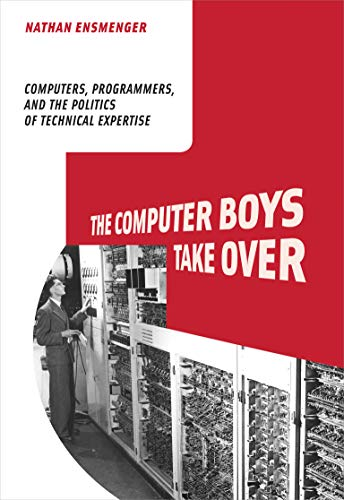

Cultures of Programming
A Look at the History of Programming
Tomas Petricek, Charles University
tomas@tomasp.net
https://tomasp.net
@tomaspetricek
Introduction
Cultures of Programming

Twist the Lion's Tail
Implemented new code replacing the "Power Peg", deployed the change and enabled a flag to turn it on.
Deployment failed, running old untested code. Rollback only made it worse!
What should have been done to prevent this?
Counterfactual Speculations (1/2)

Mathematical Culture
-
"Formal Verification of Financial
Algorithms, Progress and Prospects" - The bug was not in the algorithm
Engineering Culture
- "Had [they] implemented an automated deployment system [the error] would have been avoided."
- Cautionary tale of the DevOps movement
Counterfactual Speculations (2/2)

Managerial Culture
- "system of risk management controls and supervisory procedures not reasonably designed" as required by the rule 15c3-5
Hacker and Humanistic Cultures
- How can it take 45 minutes to stop it?
-
Automated trading is not in line
with augmenting human intellect
Cultures of Programming
What is this talk about
- Multi-disciplinary origins of programming
- Cultures remain surprisingly stable over time
- Interesting things happen when they meet
- Useful fiction for understanding the history
Case Study #1
Mathematization of Programming
Programming
in the 1940s
Planning the computation and wiring cables
No idea of a programming language!
Making Programming Easier
Hacker tricks (late 1940s)
- Pseudo-instructions
- Translated or interpreted
Mathematical theories (late 1950s)
- Chomsky's work on formal grammars
Managerial needs (1950s)
- Computer installation managers
- Need cross-machine compatibility

When technology became language
(Nofre, Priestley, 2014)
Meeting of hacker, mathematical and managerial culture!
Birth of a single unified
way of thinking?
Languages of the 1950s
Different cultures think differently
- COBOL - Common business-oriented language
- ALGOL - Formal mathematical language
- LISP - Symbolic manipulation with interactivity
Goto Considered Harmful
(Dijkstra, 1968)
Engineering
Code difficult to understand
Mathematical
Breaks compositional reasoning
Structured Programming
A better way of organizing code
- Coined by Dijkstra a year later in 1969
- Intended as a good programming practice
- Code corresponds to execution logic
- Later generalized to structured data

Structured Programming
Chief programmer teams methodology
Adapts the idea for management purposes
Organizing code vs. Organizing people
Culture Clash

Dijkstra disapproves
American "management philosophy aiming at making companies as independent as possible of the competence of their employees"
Anti-intellectualism characterized by "How to program if you cannot."
Good code as part of engineering dignity!
Clashes & Collaborations
Proofs and social processes (1977)
- Proofs lack social processes of mathematics!
- A political pamphlet from the middle ages!
- Cleanroom methodology to ensure proofs check
- Proof assistants check proofs mechanically
Case Study #2
Interactive Programming

Batch processing
Adopted when big 1940s computers became useful
Pass your stack of cards to the operator, wait hours/days for the result...
Inefficient, but the
norm in the 1950s
MIT TX-0 "Hackers"
Built for testing, loaned to MIT RLE in 1958
Used interactively through terminal
Available in time slots 24 hours per day
Interactive Programming
Struggles in the 1960s
- Low performance LINC computer for $43,000
- Interactive time-sharing systems via terminals
- "The Mother of All Demos" talk in 1968
- Computers slowly become more affordable...

Smalltalk (1970s)
Innovative system
Graphical interface
Object-oriented
Humanistic vision
Programming for kids
Personal dynamic medium
Self-modifiable
Commercialization

Xerox Star (1981)
- Adopts the graphical display
- Adopts "icons" and "desktop"
- Closed end-user applications!
Commercial Smalltalk
- Adopted in the 1990s in banks
- Collaboration and IP protection hard
- Inspired modern development practices

Interactive Programming Strikes Back
Microprocessors make it possible to build computers cheap enough for everyone
They do not do much!
The 1977 trinity

Three minicomputers
- Widely accessible
- Commodore PET, Apple, TRS-80
Hacker style of programming
- Start in interactive BASIC
- Copy programs from magazines
- Write code to load & run programs
- Actually accessible to (many) kids
Interactive Programming
Struggles in the late 1970s
- Killer apps like dBASE and VisiCalc
- Hacker and humanistic goals at odds
- Gradual shift from programming to using
- BASIC vs. "proper" engineering
Case Study #3
Software Engineering
Getting Programs to Behave

"Programming in the early 1950s
was a black art, a private arcane
matter involving a programmer, a
problem, a computer, and perhaps a small library of subroutines and a primitive assembly program."
John Backus (1976)
Debugging TX-0
UT3, FLIT, DDT
Search memory, modify program in numeric, later symbolic, codes
"Far from completely described even in internal memoranda"
Debugging Epoch Opens (1965)

Limiting factors for computing
- Hardware until mid-1950s
- Programming until mid-1960s
- What now? Now: debugging.
Terminology in the 1960s
- Program checkout - check it works!
- Debugging - programs actually run
- Testing - programs solve the problem
On-line Debugging (1966)

"With some care, it has been possible (..)
to find a bug while at a breakpoint in running a test case, call the editor to make a correction, run the program on a simpler test case to verify the correctness (...) resume execution of the original test case.."
Debugging & Testing Controversies
Niklaus Wirth (1969)
"My worry is that the facility of quick response leads to sloppy working habits"
Edsger Dijkstra (1971-3)
"Program testing can be used very
effectively to show the presence of
bugs but never to show their absence."
Testing over Time
Shifting Meaning of Testing
- Show that programs work (before 1978)
- Testing as a process phase (since 1970s)
- Find errors in programs (after 1978)
- Test as an engineering tool (since 1990s)

Debugging today?
Similar to 1960s
Learned through practice
Hacker culture only
No inter-cultural artifact?
Conclusions
Cultures of Programming
Cultures Shape Programming
Programming languages
- Mathematization a good political move
- Programming languages vs. systems
Software engineering
- Test becomes a multi-cultural entity
- Also types, but not debugging!
Interactive programming
- Breaks managerial & engineering needs
- Hard to study mathematically
Cultures of Programming
Revealing Patterns in History
- Cultures meet and collaborate
- Cultures clash over principles
- Concepts shift between cultures
- Struggle for control over programming
Conclusions
Cultures of Programming
- Define basic assumptions and ways of working
- Surprisingly stable over the 70 year history
- Still shape teaching, hiring, safety today
Tomas Petricek, Charles University
tomas@tomasp.net
https://tomasp.net
@tomaspetricek